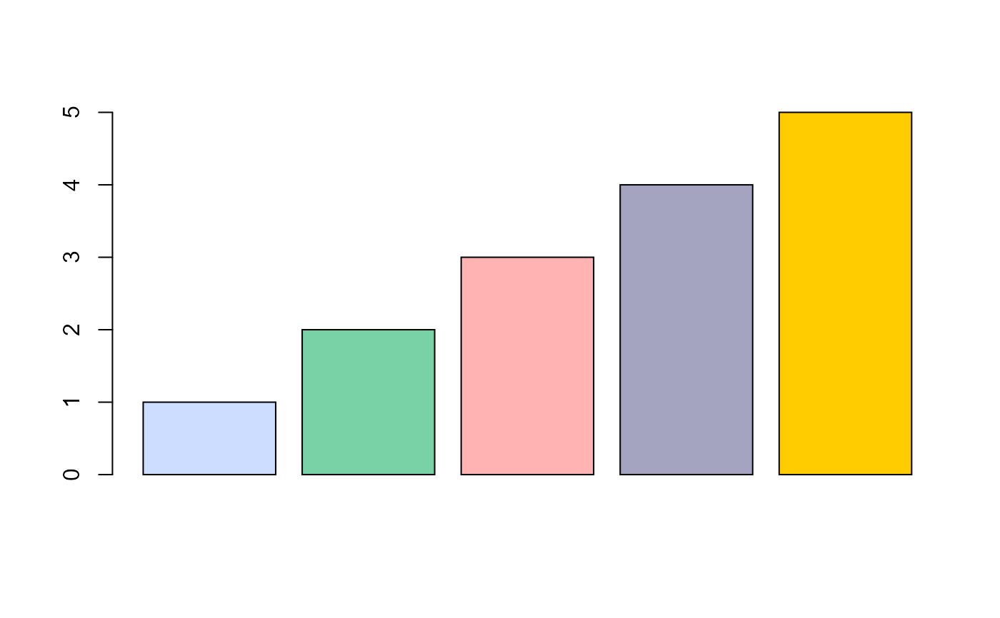
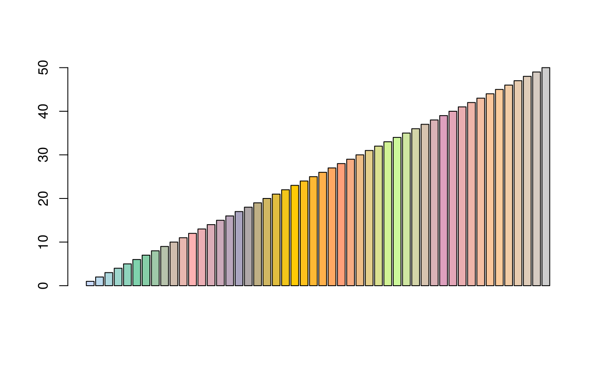

colors.RdThese functions are used for defining palettes or colors in the
epicontacts package. They include:
transp(col, alpha = 0.5) edges_pal(n) cases_pal(n) spectral(n) fac2col(x, pal = cases_pal, NA_col = "lightgrey", legend = FALSE, adj_width = FALSE)
| col | A color vector to which transparency should be added. |
|---|---|
| alpha | The threshold to be used for transparency: 0 for full transparency, and 1 for full opacity. |
| n | An integer indicating the number of colors. |
| x | A character or a factor to be converted to colors. |
| pal | A color palette. |
| NA_col | The color to be used for NA values. |
| legend | A logical indicating if legend info should be added to the
output. If TRUE, the output will be a list, with colors in the
|
| adj_width | A logical indicating if legend labels should be adjusted so they all have the same number of characters (by inserting whitespaces). This ensures the size of the legend keys are the same. |
cases_pal: discrete color palette used for cases (comes from the
dibbler package)
spectral: continuous color palette (comes from the
adegenet package)
transp: makes colors transparent (comes from the
adegenet package)
fac2col: translates a character or a factor to a color using a
palette (comes from the adegenet package)
